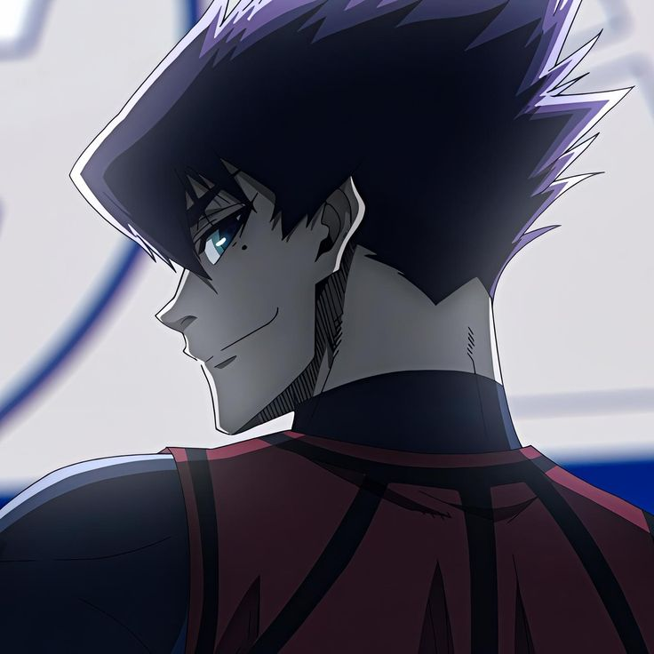

EDICIÓN PARTIDO SUB-20 Estilo y Adaptación del Camaleón de Reo Mikage Legendario (Pasiva de Estilo – Pase) Eres un jugador nacido para adaptarse al entorno que te rodea. Tu talento radica en la versatilidad absoluta, capaz de ocupar cualquier zona del campo con total soltura, analizando cada jugada con tu conciencia espacial y traduciéndose en decisiones efectivas que elevan la fluidez del equipo. No importa si es defensa, centrocampista o delantero, todo se te da bien. Gracias a tu visión de campo avanzada y lectura del juego, tus estadísticas base se ven potenciadas por una conciencia espacial otorgando un aumento pasivo de +5 puntos en todas tus estadísticas. Tu control del juego te permite distribuir y desequilibrar con precisión quirúrgica, por lo que Pase y Regate se ven aumentados en +11 puntos inicialmente. Tiro, Defensa, Físico y Velocidad se ven aumentados en +8 puntos. Como efecto acumulable, cada vez que venzas en un duelo (con o sin ruleta), Pase y Regate aumentan en +6 puntos hasta 3 veces. Además, reduces -13 puntos en defensa enemiga en encuentros de Pase vs Defensa y Regate vs Defensa una vez ganes la acumulable máximo. Tus pases pueden tomar curvatura libre sin alterar su precisión, y al ejecutar pases a larga distancia, solo sufres un 35% de reducción por distancia, a diferencia del 50% convencional. Pero lo que te vuelve verdaderamente letal es tu capacidad de replicar jugadas ajenas: Tienes la habilidad de copiar cualquier jugada de otro jugador dentro del campo (ya sea una jugada de Genio, de alto rendimiento o estilo único) y reproducirla perfectamente, ganando +5 puntos en la estadística central que la jugada representa (ya sea Pase, Tiro, Defensa, Regate, Físico o Velocidad). Este aumento permanece indefinidamente, pero no puedes volver a replicar una jugada para seguir acumulando la misma estadística. Sin embargo, puedes repetir el proceso en otra categoría distinta (por ejemplo, primero en Tiro, luego en Defensa). Aunque tu capacidad de réplica tiene sus límites: no puedes copiar pasivas ni jugadas exclusivas de jugadores del New Gen Eleven, tampoco de Físico ni Velocidad. Sin embargo, tienes la capacidad para adaptarte al estilo salvaje y explosivo del demonio Ryusei Shidou, la técnica precisa y control absoluto de Seishiro Nagi, así como las capacidades defensivas de un jugador de categoría primera división como Oliver Aiku. Camaleón Una habilidad que representa tu naturaleza adaptable, capaz de cambiar de rol en cualquier momento del partido. Con esta habilidad puedes copiar y utilizar una pasiva activa dentro del campo (ya sea de un aliado o enemigo), manteniéndola sólo durante la jugada (un post). Puedes copiar todo tipo de pasivas, sin importar si son de tipo ofensivo, defensivo o mixtas. Como ventaja única por tu acondicionamiento físico superior, si una pasiva contiene características de Físico o Velocidad a ruletas de riesgo (como probabilidad de lesión), esa ruleta se ajusta automáticamente a 80% de no lesión y 20% de lesión. Ejecución Para activar esta habilidad, debes redactar claramente qué pasiva copias (con nombre y fuente), usarla de forma contextual dentro de tu jugada, y hacer referencia explícita al uso de la habilidad como Camaleón. Tras la ejecución, no tiene cooldown, solo las habilidades de las pasivas que copias respetando su tiempo de enfriamiento de las habilidades usadas. Gyro Shot – Estilo del Camaleón Un disparo con efecto que cambia de trayectoria y se caracteriza por su precisión, a pesar de ser un tiro curvo no tan violento comparado a otros con estas características. La elevación que toma aparenta desviarse de la portería aparentando que se va fuera sin embargo desciende repentinamente entrando en la red reduciendo un -8 en la estadística del portero. Si un rival interviene en la trayectoria del tiro es forzado a Tiro vs Defensa con reducción de -20% en la estadística de tu oponente. Ejecución Debes redactar como ejecutas el tiro con efecto que desciende en curva hacía la portería pareciendo que se va fuera, tienes que hacer mención de Gyro Shot – Estilo del Camaleón esperando 7 turnos globales de Cooldown una vez lo uses. Control Absorbente x Despeje Giratorio – Estilo del Camaleón Una técnica que redefine lo imposible: convertir un rechazo, un mal pase, o incluso una posición incómoda en una oportunidad brillante. El dominio del cuerpo y la técnica se fusionan para realizar un giro perfecto en el aire o el suelo, conectando con el balón en un disparo/pase giratorio que transforma en control absorbente. Has copiado con maestría el talento inhumano del control perfecto y la improvisación total, mediante esta habilidad anulas el enfrentamiento en un balón suelto, rechace o pase. Mediante un giro técnico y estético, golpeas el balón sin importar el momento logrando mantener la fluidez y precisión de la jugada. Ya sea para asistir o despejar con elegancia, esta técnica convierte el terreno en una plataforma para la creatividad pura. Tu aumenta en +6 puntos en Pase al momento de usar esta habilidad hasta 2 veces como efecto acumulable. La dirección del pase puede adquirir efecto curvado o flotante a los 15m de distancia. Si tu equipo recupera el balón tras tu acción, ganan un bono temporal de +5 en Tiro, Pase y Regate durante esa misma jugada. La defensa que busque interceptar se ven forzados a -20% con duelo Defensa vs Pase. Ejecución Para utilizar Control Absorbente x Despeje Giratorio – Estilo del Camaleón, debes narrar una jugada donde el balón te llegue en un ángulo o situación incómoda y tú, con elegancia y dominio técnico, conectes con él mediante un giro parcial o completo para transformar la situación. La acción puede ser usada como pase o tiro (dependiendo del contexto), y se debe hacer mención directa al uso de la habilidad. Una vez usada, la habilidad entra en su cooldown de 7 turnos globales. Defensa Asfixiante – Estilo Camaleón Has absorbido el instinto de un defensor que no da respiro. Esta técnica representa el dominio total de la presión corporal y el cierre de espacios al punto de eliminar por completo las rutas del rival. Tu cuerpo se convierte en una serpiente asfixiando su presa como una sombra que persigue y encierra a su presa, obligando a Regate vs Defensa, Tiro Vs Defensa o Defensa vs Pase, depende lo que se requiera el post. No se trata de quitar el balón directamente, sino de sofocar la libertad del atacante: niegas el pase, el giro y el espacio, ejecutando un marcaje tan ajustado que corta el oxígeno de la jugada sin hacer contacto. Tienes +12 puntos en Defensa y +10 en Físico mientras mantengas una marca asfixiante durante el enfrentamiento. Durante este enfrentamiento, si el rival no logra desmarcarse o ejecutar su acción con claridad, se le aplica una reducción de -20 puntos en la estadística que utilice (Regate, Pase o Tiro), siempre que tu narración muestra cómo reducir su margen de ejecución. Si el rival pierde la ruleta forzada de Regate vs Defensa o Pase vs Defensa o Tiro vs Defensa, obtienes un aumento temporal de +6 puntos en Pase o Regate (a elección) para la siguiente jugada ofensiva que realices. Ejecución Para activar Defensa Asfixiante – Estilo Camaleón, tu narración debe reflejar un marcaje pegajoso, constante, sin dejar espacio para respirar. No buscas robar el balón en un solo movimiento, sino presionar con el cuerpo, cerrar líneas, negar la recepción y limitar el accionar del rival. Debe mencionarse el uso de la habilidad y detallar cómo ejecutas la presión. Tras su uso la habilidad entra en cooldown de 7 turnos globales. Movimiento de flujo Dragon Drive Shot – Estilo del Camaleón Este disparo no sigue patrones ni estructura, no es elegante, es salvaje, brutal y completamente egoísta. Una técnica creada por el deseo de romper la red sin importar el método. Mediante tu estilo adaptable, réplicas a la perfección el instinto animal contenido en un disparo inhumano: una patada desmedida donde la violencia y la precisión se combinan en una sola ejecución. Tu cuerpo toma la postura de una bestia, forzando el disparo como si tu pierna fuera una lanza viva. Tus músculos se tensan, tu visión se estrecha, y en ese instante, todo lo que no sea portería deja de existir. Has copiado el estilo ofensivo de una criatura salvaje que no piensa en fallar. Tu Tiro aumenta en +10 puntos al activar esta habilidad. La reducción de la Defensa del rival se reduce en -25% puntos durante el enfrentamiento y es forzado a Tiro vs Defensa. Ejecución Debes hacer mención del uso de la habilidad en un balón que este rechazado o en pleno aire para hacer referencia a Tiro Dragón – Estilo del Camaleón rematando con un disparo feroz. Esta habilidad tiene 8 turnos globales de Cooldown.
EDICION PARTIDO SUB-20 El corazón latente de blue lock LEGENDARIO Has destrozado el sueño de muchos jugadores para llegar a dónde estás hoy en día, dentro del proyecto blue lock solo triunfa el más egoísta y ese eres tu. Tras sobrevivir a ese infierno lograste situarte dentro del equipo inicial por lo que tus habilidades están al nivel necesario para resaltar sobre el montón. Tu mejor habilidad es tu cerebro y conciencia superior por lo que recibes +5 puntos en todas tus estadísticas por ello. Como delantero tu mejor arma es tu disparo directo que no se tuerce ante ningún obstáculo y va a parar al punto exacto al que apuntas sumando +12 de tiro de forma inicial pero si te encuentras a 15 metros de portería sumas +10 puntos extras a la hora de rematar. Tu rango maximo de tiro es de 19 metros antes de comenzar a verte afectado por las reducciónes correspondientes. Tu coordinación en equipo es de las mejores del proyecto pero aún así tus habilidades no te siguen el ritmo por lo que tú pase aumenta +10 de forma solida. Tu físico no es la gran cosa, tu velocidad tampoco lo es por lo que ambas estadísticas aumentan solamente +7 puntos. Tu regate, aunque extraño de ver por el nivel de los adversarios suma +4 puntos a la estadística. Cómo un detalle extra puedes predecir a jugadores impredecibles después de 9 post globales gracias a tu cabeza que nunca deja de maquinar. ¡MI TIRO DIRECTO! Te niegas a ceder a las circunstancias. ¿Defensas bloqueando tu trayectoria? ¿Compañeros pidiendo el pase o intentando robarte la gloria? No hay cabida para eso dentro de tu imagen de gol por lo que aún así disparas reduciendo -25% la defensa de aquellos que busquen interferir en tu disparo mientras que tú sumas +10 de tiro estés o no dentro de tu zona dorada. Si logras convertir esta oportunidad obtienes +10 puntos permanentes en tiro durante el resto del partido. Para hacer uso de esta habilidad debe hacerse mención a "¡MI TIRO DIRECTO!" Para posteriormente entrar en un cooldown de 4 turnos. Desaparecido Robaste o mejor dicho, adaptaste está habilidad de un jugador que no destacaba en nada realmente pero era capaz de ganar las espaldas con facilidad con el juego sin balón. Prestando atención al campo visual del oponente puedes dictar el momento exacto en el que sales de su campo visual para tomar su espalda de forma inmediata dejandolo sin retroceso por el resto de la jugada [No puede regresar ni manipulado por compañeros]. Está habilidad posee 5 turnos de cooldown propios, la forma de hacer uso de esto es haciendo referencia a "¡Desaparecido!" y redactar la forma en la que tomas su espalda. ¡Sientelo, fluye conmigo! Puedes influenciar psicológicamente a tus compañeros aunque sean mejores que tú al posicionarte siempre en la mejor posición para recibir un pase. Tu ego dicta el rumbo del partido pudiendo crear jugadas instintivas que pueden llegar a considerarse casi como reacciones químicas por lo que sumas +4 puntos en todas tus estadísticas durante la jugada. Está habilidad posee 5 turnos de cooldown y debe hacerse referencia a "¡Sientelo, fluye conmigo!" Durante el post. Metavisión imperfecta × Factor suerte Durante un segundo del partido obtienes lucidez de lo que pasa. Trayectorias de tiros, pase, avances y contraataques, todo queda a tu disposición para dictar el momento ideal de la jugada ya sea para rematar o pasar el balón. Está habilidad te permite anticiparte a cualquier balón suelto obteniendo dominio de el sin necesidad de disputarlo en una ruleta. Durante la jugada obtienes +7 puntos en todas tus estadísticas sin excepción. Cómo dato importante está habilidad tiene un uso único durante el partido, significando que solo se puede activar una vez durante el encuentro además de que está habilidad no es utilizable hasta que hayan pasado 9 post globales.